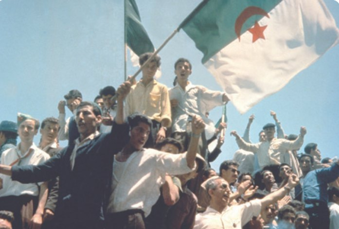
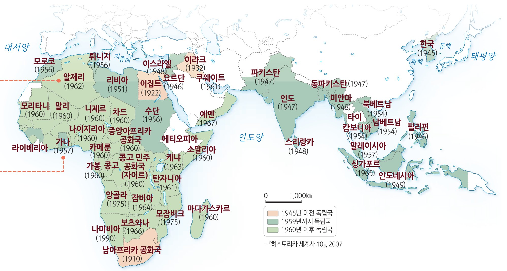
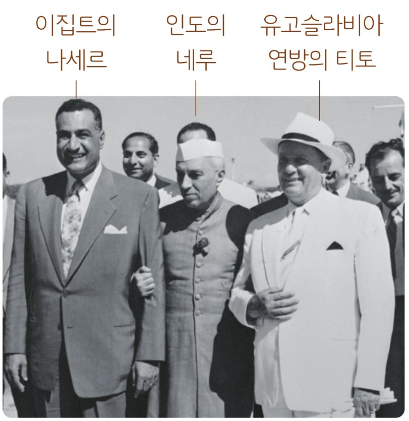
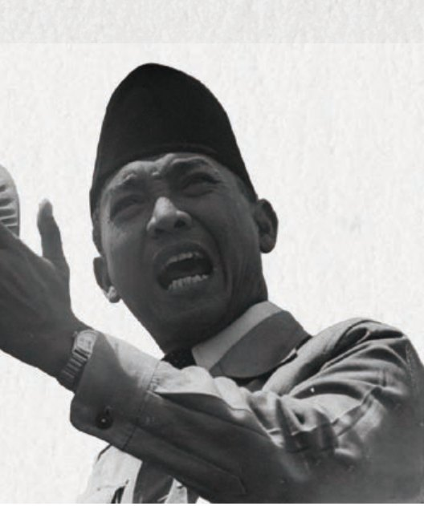

제3 세계가
나타나다
미국 중심의 자본주의 진영과 소련 중심의 공산주의 진영이 맞서던 냉전 시대. 막 독립한 아시아와 아프리카의 나라들은 “우리는 어느 쪽에도 속하지 않겠다”라고 외쳤습니다. 이 나라들은 무엇을 원했고, 세계를 어떻게 바꾸었을까요?
- 1제3 세계가 나타난 배경을 파악할 수 있다.
- 2제3 세계의 등장이 세계정세에 미친 영향을 설명할 수 있다.
평화 5원칙,
평화 10원칙
인도, 이스라엘,
인도네시아, 이집트
식민지였던 나라들은 그 뒤 어떻게 되었을까?

6차시에 우리는 제1차 세계 대전 이후 인도, 동남아시아, 서아시아, 아프리카에서 일어난 민족 운동을 배웠습니다. 그리고 지난 시간에는 제2차 세계 대전 이후 세계가 자본주의 진영과 공산주의 진영으로 나뉘는 냉전 체제를 배웠습니다.
생각을 쓴 뒤 열어 보기
식민 지배에서 벗어나 독립하다
제2차 세계 대전 이후 아시아와 아프리카의 여러 나라는 서양 열강의 식민 지배에서 벗어나고자 하였다. 교과서 220쪽
인도
1947영국의 식민지였던 인도는 1947년에 마침내 독립을 이루었다.
인도네시아
1949동남아시아에서는 인도네시아 등 많은 나라가 독립하였다.
이스라엘
1948서아시아에서는 유대인이 영국, 미국 등의 도움을 받아 이스라엘을 세웠다.
이집트
1952 · 1956나세르가 중동 전쟁에서 패배한 왕정을 몰아내고 공화정을 세웠다(1952). 대통령이 된 그는 수에즈 운하의 국유화를 선언하고 영국과 프랑스로부터 운영권을 되찾았다(1956).
그러나 독립한 아프리카 국가들 사이에서는 영토를 둘러싼 분쟁이 자주 일어났다. 이러한 분쟁으로 오늘날 아프리카는 빈곤, 기아 문제 등이 발생하고 있다.
지도 위의 번호를 눌러 보세요. 괄호 안 숫자는 독립한 해입니다.

번호를 누르면 그 나라의 독립 이야기가 여기에 나와요.
교과서에 나온 사건을 일어난 순서대로 차례로 누르세요. 틀리면 카드가 흔들리고 처음부터 다시 시작합니다.
“어느 쪽에도 속하지 않겠다”
자본주의 진영
미국 중심 · 트루먼 독트린, 마셜 계획, 북대서양 조약 기구(NATO) (7차시)
공산주의 진영
소련 중심 · 코민포름, 코메콘, 바르샤바 조약 기구 (7차시)
비동맹주의
아시아와 아프리카의 독립국 · 어느 진영에도 속하지 않겠다!
- 1954인도와 중국의 대표는 상호 불가침, 평화 공존 등의 내용을 담은 평화 5원칙에 합의하였다.
- 1955이를 기초로 아시아와 아프리카의 29개국 대표들이 아시아·아프리카 회의(반둥 회의)를 열었다.
- 1955이 회의에서 국제 분쟁의 평화적 해결과 상호 존중 등의 원칙을 제시한 평화 10원칙을 발표하였다. → 제3 세계가 국제 사회에 독자적인 정치 세력으로 등장하였다.
- 1961~제3 세계에 속한 국가들은 정기적으로 회의를 열어 개발 도상국의 이익과 권리를 지키기 위해 노력하였다. 그리고 국제적으로 영향력을 키워 나가면서 기존 냉전 체제에 변화를 주었다.

지난 시간과 오늘 배운 내용을 떠올리며, 각 카드가 어느 세계에 해당하는지 골라 보세요.
북대서양 조약 기구(NATO)
평화 10원칙 발표(1955)
코메콘(경제 상호 원조 회의)
어느 진영에도 속하지 않겠다는 비동맹주의
마셜 계획
바르샤바 조약 기구
제3 세계 국가들의 공동 목표는 무엇이었을까?
교과서 221쪽 · 비판적 사고력, 정보 활용 능력
자료 1수카르노의 아시아·아프리카 회의 개막 연설(1955)

평화를 유지하는 것보다 더 시급한 일은 없습니다. 평화가 없다면 우리의 독립은 별 의미가 없습니다. 나라를 다시 세우는 일은 더욱 의미가 없습니다. …… 우리는 많은 것을 할 수 있습니다. 우리는 세계 문제에 이성적인 목소리를 낼 수 있습니다. …… 우리는 다른 대륙에 사는 사람들에게 우리 대다수가 전쟁이 아니라 평화를 지지하며, 우리가 가진 힘이 무엇이든 항상 평화의 편에 기댈 것이라는 점을 보여 줄 수 있습니다.- 아시아·아프리카 회의, 1955 · 사진: 연설하는 인도네시아의 수카르노
자료 2평화 10원칙(1955)
2자료 2에서 가장 중요하다고 생각하는 조항을 선택하고 그 까닭을 써 보자. (위 자료 2에서 조항을 눌러 고르세요)
내가 고른 조항: 아직 고르지 않았어요
예시 답안 보기
예시 답안 보기
배운 내용을 확인해요
1. 수에즈 운하의 국유화를 선언한 이집트의 대통령은 이다.
2. 1960년에는 아프리카에서 17개국이 독립하여 ‘’(이)라고 불렸다.
3. 자본주의 진영과 공산주의 진영 중 어느 쪽에도 속하지 않겠다는 주장을 (이)라고 한다.
4. 비동맹주의를 내세운 아시아와 아프리카의 독립국들을 가리켜 (이)라고 한다.
5. 1954년 인도와 중국의 대표는 상호 불가침, 평화 공존 등의 내용을 담은 에 합의하였다.
6. 1955년 아시아와 아프리카의 29개국 대표들이 모여 국제 분쟁의 평화적 해결과 상호 존중 등을 제시한 을/를 발표하였다.
1. 인도는 프랑스의 식민지였다가 1947년에 독립하였다.
2. 서아시아에서는 유대인이 영국, 미국 등의 도움을 받아 이스라엘을 세웠다.
3. 독립한 아프리카 국가들 사이에서는 영토 분쟁이 거의 일어나지 않았다.
4. 아시아·아프리카 회의(반둥 회의)는 평화 5원칙을 기초로 열렸다.
5. 제3 세계의 등장은 냉전 체제에 아무런 영향을 주지 못하였다.
오늘 배운 제3 세계, 내 말로 정리하기
예시 답안 보기
제3 세계가 등장하고 세계가 여러 갈래로 나뉘면서 냉전은 어떻게 바뀌었을까요? 다음 시간에는 국제 질서가 변화하다(교과서 222~225쪽)를 배웁니다.
도입 생각(STEP 1), 독립 순서·세계 구분 결과, ‘우리 해 보자’ 답(STEP 4), 빈칸·O/X 점수, 서술형과 한 줄 성찰이 한 번에 제출됩니다. 선생님 화면에 바로 나타나요. 고쳐서 다시 제출해도 괜찮아요.